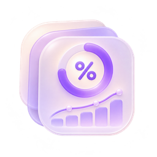
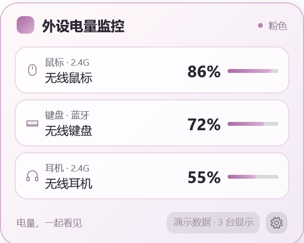

界面预览 ／ 示例数据WINDOWS APP · v2.6.1Codex 用量监控清楚查看订阅额度、Token 用量与缓存命中率，让日常使用更有数。Windows 10 / 1164 位版本 2.6.1最新更新：2026-11-13 01:50下载软件 ↓查看详情 ↗Windows 安装包 · 约 2.3 MB · 备用下载
真实界面 ／ 示例设备与数据WINDOWS APP · v1.3.7外设电量监控把鼠标、键盘与耳机的电量放在桌面，一眼掌握设备状态。Windows 10 / 11Intel / AMD 64 位体验版 1.3.7最新更新：2026-11-13 03:22下载软件 ↓查看详情 ↗Windows 安装包 · 约 54.2 MB · 部分设备需进一步验证 · 备用下载 ↓（备用下载需要启用 JavaScript）
✦红果短剧（测试）软件展示✦SOFTWARE · v1.2.24红果短剧（测试）红果短剧 PC 播放器，作者：洋滨。此条目仅用于上传功能测试。Windows 64 位（兼容性待验证）版本 1.2.24最新更新：2026-11-13 00:13下载软件 ↓查看详情 ↗文件 · 约 26.1 MB · 备用下载 ↓